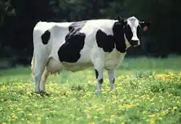

Kiio Cynthia Kanini
GitHub: @Kaninzz
Favorite Tech: JavaScript
Fun Fact: I love kittens!
If I were an animal: I'd be a unicorn 🦄 because they’re rare, magical, and full of wonder—just like how I view creativity and imagination in tech.

GitHub: @Kaninzz
Favorite Tech: JavaScript
Fun Fact: I love kittens!
If I were an animal: I'd be a unicorn 🦄 because they’re rare, magical, and full of wonder—just like how I view creativity and imagination in tech.
GitHub: @Kaninzz
Favorite Tech: JavaScript
Fun Fact: I love kittens!
GitHub: @Perismakworo
Favorite Tech: JavaScript
Fun Fact: I love puppies!
Favorite Animal: Cow
why?Beef, derived from cows, is one of the most widely consumed meats globally due to its rich flavor, high protein content, and cultural significance. From grilled steaks and slow-cooked stews to street-style delicacies like nyama choma, beef plays a central role in many culinary traditions. However, its consumption also raises important considerations around health, sustainability, and ethical farming practices, leading to growing interest in alternative proteins and responsible sourcing.
GitHub: @ZahaEssa
Favorite Tech: JavaScript
Fun Fact: N/A
Why? They're loyal